Pitboard — приложение для менеджеров гоночных команд
От доски с магнитами к приложению с крутой аналитикой
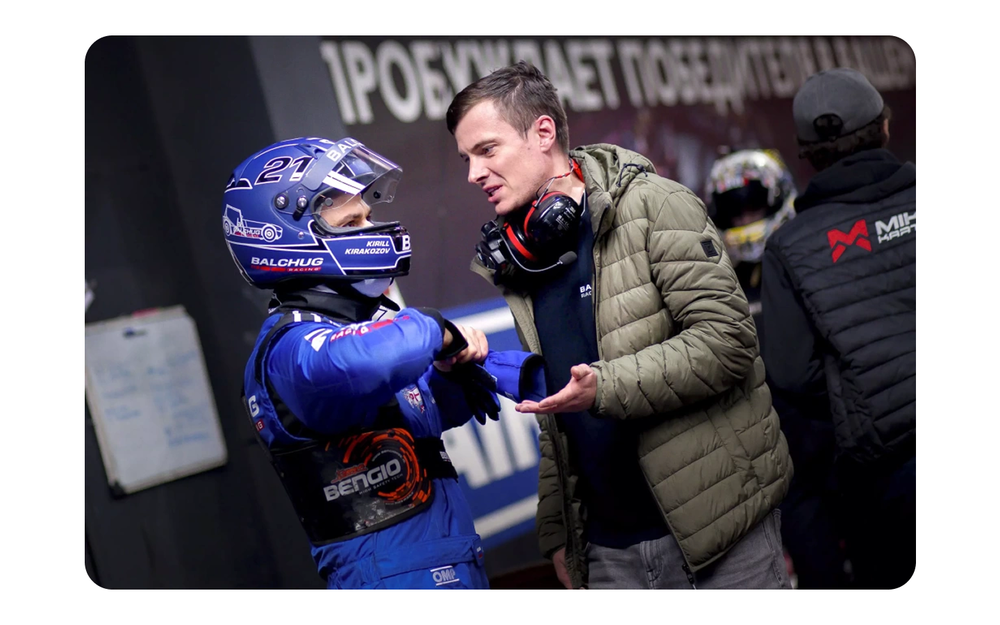
Контекст
Картинг — это вид спорта и развлечений, гонки на специализированных простейших машинах без кузова, которые называются карты.
Существует обычный и командные виды картинга, нас интересует второй, более сложный из них. Люди объединяются в команды и в длинном заезде по очереди сменяют друг друга, побеждает тот, чья команда проехала больше всего кругов за отведенное время.
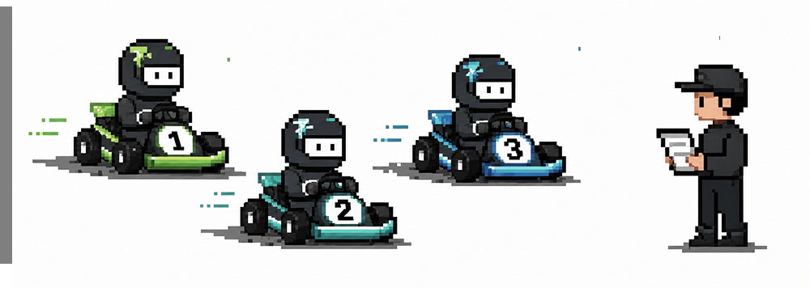
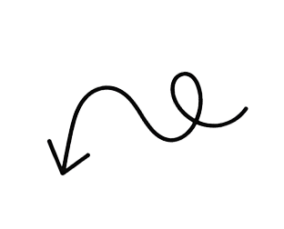
Это менеджер — человек, координирующий свою команду
Победить без хорошего менеджера невозможно
Главная задача менеджера отслеживать время стинта (один заезд одного человека, как правило, длится от 10 до 20-30 минут) и, когда оно подходит к концу, сообщать, что пора меняться со следующим сокомандником.
Проблема
Результат гонщика зависит не только от его мастерства, но и от состояния карта.
Менеджер на протяжении всей гонки оценивает какие карты едут быстро, а какие медленно. Своей команде во время смены участника он говорит брать лучшие из них.
— Доска с магнитами — Занимает много времени — Сложно уследить, высокий риск путаницы
— Приложение для оптимизации — Пара кликов вместо долгой перестановки — Продуманная аналитика — большое преимущество
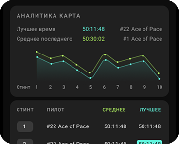
Приложение упростит задачу менеджера и позволит достичь команде новых высот.
Бенчмаркинг
Я провела анализ существующих решений.
Go Kart Team Manager
Выполняет базовые функции, но без глубокой аналитики. В целом, достаточно неудобное, интерфейс недружелюбный. Непопулярное среди менеджеров.
RaceMann
Мощное приложение, коннектится с системой трека, показывает время и лидеров. Однако оно неуниверсально — его может подключить только сам картинг-центр. Использовать его там, где оно не подключено, не получится.
Изначально решили ориентироваться на Go Kart Team Manager. Взять аналогичное отображение картов в виде таблицы, но сделать интерфейс более приятным, перемещение картов с трека в питлейн удобнее, добавить в функционал аналитику.
Но заказчик запросил расширение. Команда разработчиков утвердила, что программно возможно подтягивать все данные о гонке: время заезда каждого участника, кол-во кругов, место на треке и тд.
Было принято решение сделать полноценную замену RaceMann, с уникальной возможностью связать ее с любым картинг-центром и полноценной аналитикой во время и после заезда.
Ключевые сценарии
— Отслеживание гонки
Экран гонки сделала максимально удобным для менеджера.
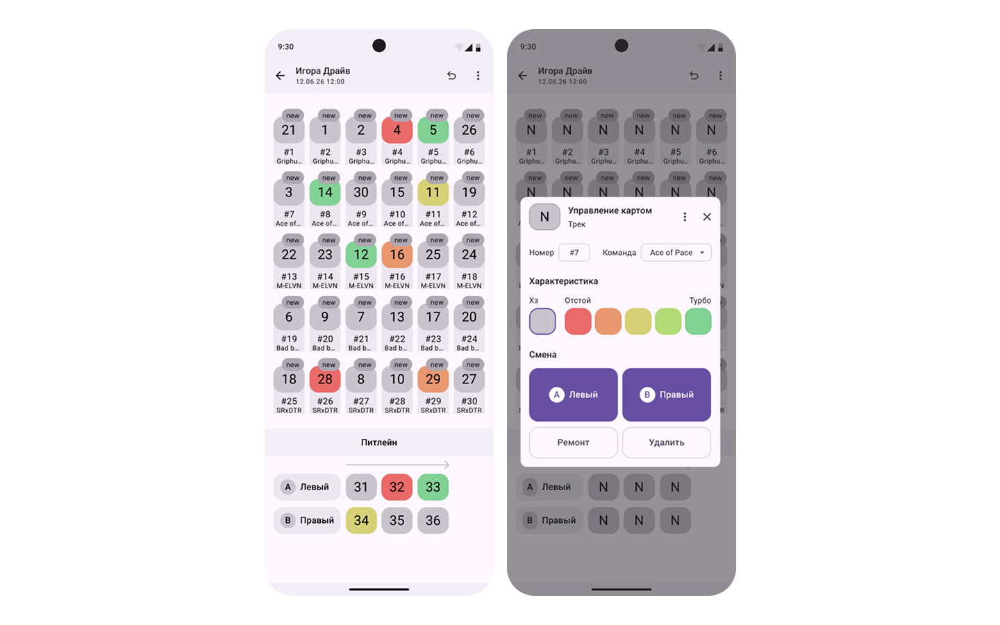
— Редактирование информации
Номер пилота и карта — неодинаковы. На протяжении всей гонки пилоты меняют карты, менеджер должен успевать за этим следить и отмечать в приложении.
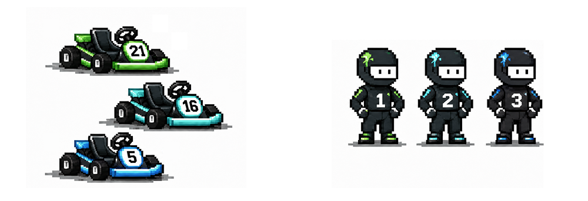
Изначально неизвестно — кто на каком карте поедет
Номера определяются жеребьевкой и не разглашаются
Чтобы узнать номер, менеджер наблюдает за гонкой и вписывает номер карта соответствующего гонщика в приложение. Это происходит постепенно, потому что номер бывает сложно разглядеть. После этого менеджер может выставить оценку.
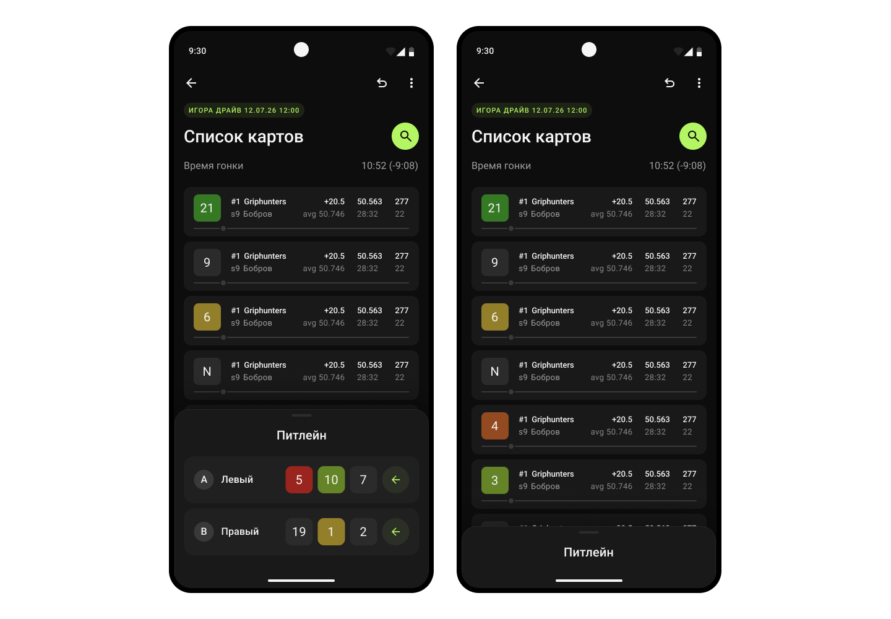
— Быстрое переключение
Реализовала удобный поиск картов: после нажатия на кнопку «Поиск» появляется окно-оверлей со списком уже указанных номеров картов и пока неизвестных — без номера.
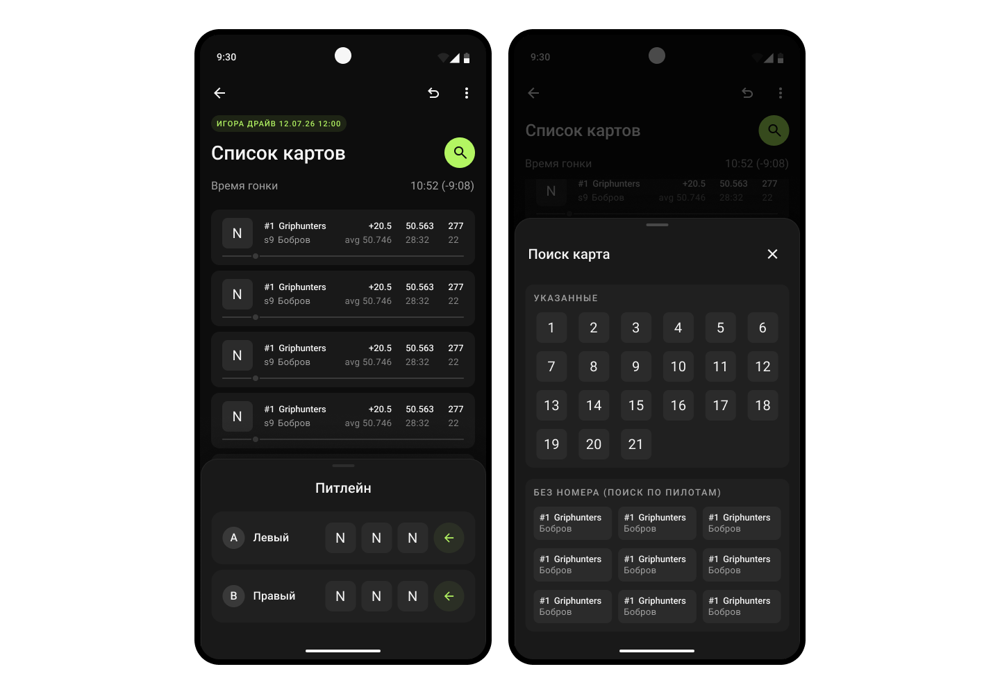
— Аналитика
После занесения номера карта приложение начинает записывать по нему аналитику: за сколько времени проезжаются круги, какое среднее время стинта. Именно эта информация помогает быстро оценить на сколько хорош карт.
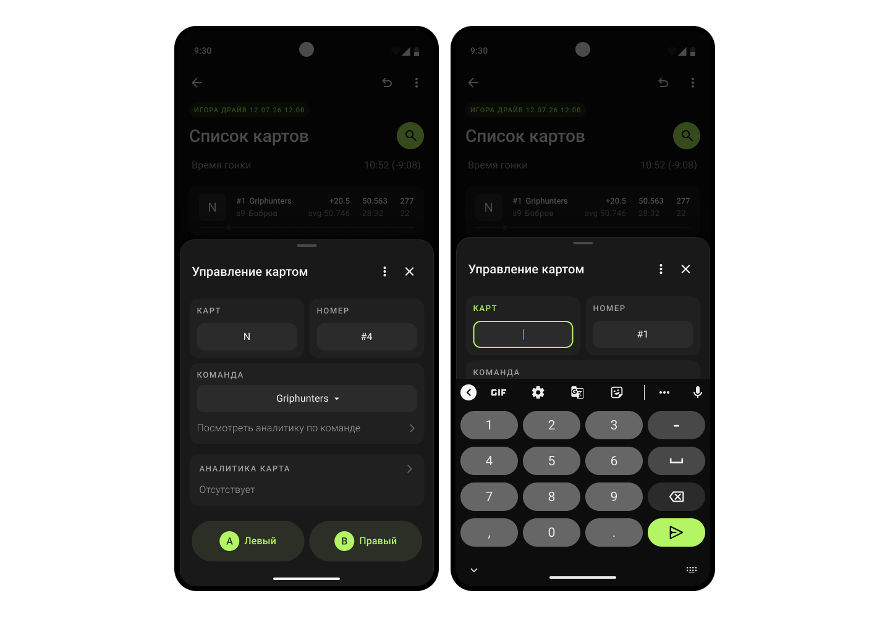
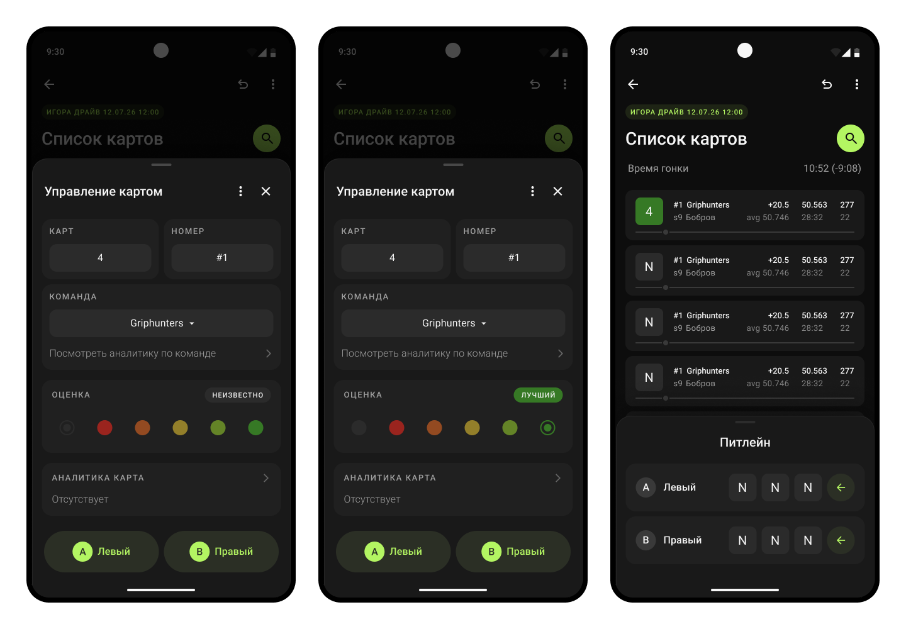
— Аналитика по командам
Чтобы посмотреть аналитику уже прошедших стинтов и как их проехали участники из других команд, нужно перейти в аналитику по командам. Там представлен список всех прошедших и текущего стинтов.
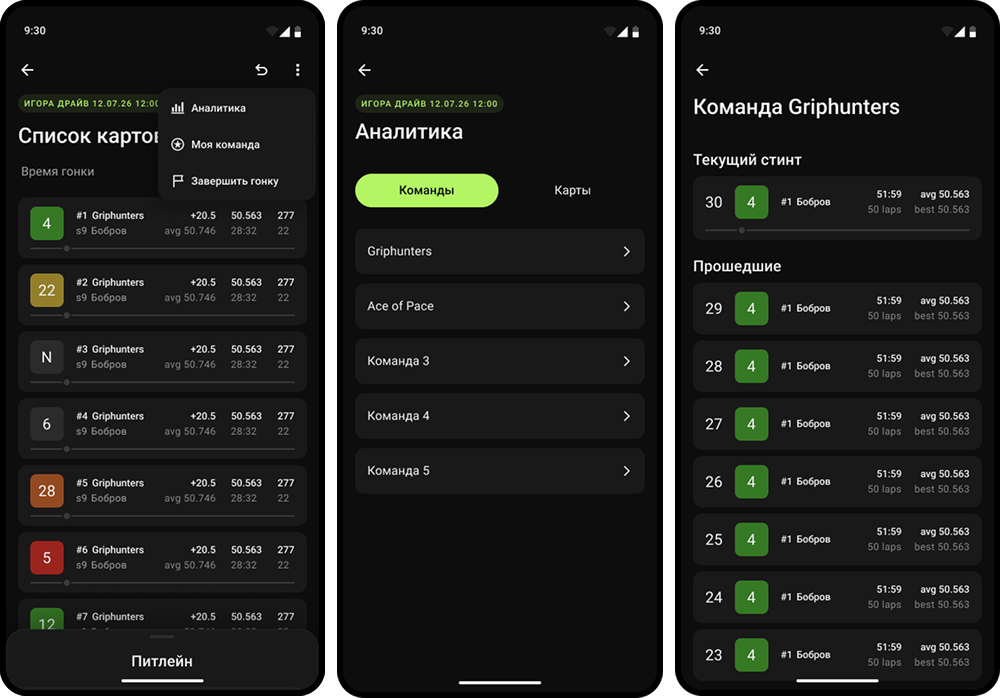
Результаты
Проект находится в активной разработке. На данный момент я: — Спроектировала и прототипировала основные сценарии: управление картами, отслеживание аналитики, оценка картов — Провела 3 итерации дизайна с обратной связью от заказчика — Собрала дизайн-систему на токенах, проработала состояния компонентов
Что сейчас
Мы перешли к следующему этапу — подвязке приложения к реальным картинг-центрам. Приложение должно вытягивать данные о гонках (время, круги, пилоты) напрямую из системы трека.
На этом этапе я завязана на разработчиков — они определят системные ограничения и помогут реализовать интеграцию. Моя задача — адаптировать интерфейс под эти ограничения и сохранить удобство.
Что дальше
После завершения интеграции мы планируем провести полноценное тестирование с реальными менеджерами гоночных команд. Это поможет проверить, насколько приложение решает их задачи в условиях гонки.
Итог
Уже сейчас проделана большая работа — приложение готово к основным сценариям и способно заменить доску с магнитами. Осталось довести до ума интеграцию, и продукт будет готов к использованию.